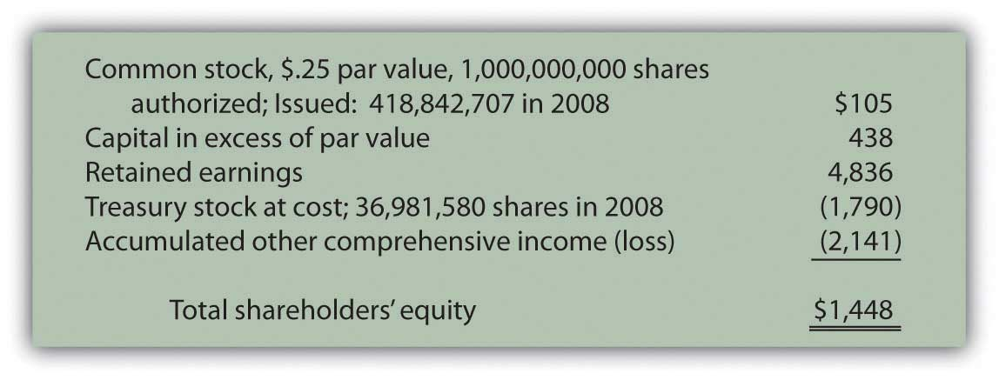

At the end of this section, students should be able to meet the following objectives:
Question: Several accounts frequently appear in the shareholders’ equity section of a balance sheet reported by a corporation. Each has its own particular meaning. For example, as of January 3, 2009, Kellogg Company reported the following information (all numbers in millions).
Figure 16.1 Shareholders’ Equity—Kellogg Company as of January 3, 2009
Some of these terms have been examined previously, others have not. For example, “retained earnings” was described in early chapters as the increase in net assets generated by net income over the life of a company less any amounts distributed as dividends during that same period. In Chapter 12 "In a Set of Financial Statements, What Information Is Conveyed about Equity Investments?", “accumulated other comprehensive income” was discussed because it was utilized to record changes in the fair value of available-for-sale securities. Gains and losses in the worth of these investments were not included within net income. Rather, they were reported under this heading within stockholders’ equity and subsequently used in computing comprehensive income.
Common stockA type of capital stock that is issued by every corporation; it provides rights to the owner that are specified by the laws of the state in which the organization is incorporated. has also been mentioned in connection with the capital contributed to a company by its owners. However, Kellogg communicates additional information about its common stock such as the number of authorized and issued shares as well as its par value. What is common stock? That seems the logical first step in analyzing the information provided by a company about its capital shares.
Answer: Common stock represents the basic ownership of a corporation. One survey in 2007 found that common stock is the only type of capital stock issued by approximately 90 percent of corporations.Yury Iofe, senior editor, and Matthew C. Calderisi, CPA, managing editor, Accounting Trends & Techniques, 62nd edition (New York: American Institute of Certified Public Accountants, 2008), 289. Obtaining ownership of a company’s common stock provides several distinct rights. However, the specific rights are set by the laws of the state of incorporation and do vary a bit from state to state.Although the Kellogg Company has its headquarters in Battle Creek, Michigan, the company is incorporated in the state of Delaware. Thus, the laws of Delaware set the rights of the common stock shares for this company.
Question: “Authorized,” “issued,” and “par value” are terms mentioned by the Kellogg Company in describing its ownership shares. What terms are associated with capital stock and what do they mean?
Answer:
AuthorizedThe maximum number of shares that a corporation can issue based on the articles of incorporation approved by the state government at the time of incorporation.. In applying to the state government as part of the initial incorporation process, company officials indicate the maximum number of capital shares they want to be able to issue. This approved limit is the authorized total. Corporations often set this figure so high that they never have to worry about reaching it. However, states do allow the authorization to be raised if necessary.
IssuedThe number of shares of a corporation that have been sold or conveyed to owners.. The number of issued shares is simply the quantity that has been sold or otherwise conveyed to owners. Kellogg reports that one billion shares of common stock were authorized by the state of Delaware but only about 419 million have actually been issued to stockholders as of the balance sheet date. The remaining unissued shares are still available if the company needs to raise money by selling additional capital stock.
OutstandingThe number of shares of a corporation that are currently in the hands of the public; it is the shares that have been issued since operations first began less any treasury shares repurchased and still held by the corporation.. The total amount of stock currently in the hands of the public is referred to as the shares “outstanding.” Shares are sometimes bought back from stockholders and recorded as treasury stock. Thus, originally issued shares are not always still outstanding. According to the information provided, Kellogg has acquired nearly thirty-seven million treasury shares. Although not mentioned directly, Kellogg now has only 382 million shares of common stock outstanding in the hands of the stockholders (419 million issued less 37 million treasury shares). This number is important because it serves as the basis for dividend payments as well as any votes taken of the stockholders.
Par valueA number printed on a stock certificate to indicate the minimum amount of money owners must legally leave in the business; generally set at a low amount to avoid legal complications.. The most mysterious term on a set of financial statements might well be “par value.” The requirement for a par value to be set was created decades ago in connection with the issuance of stock. It is printed on the face of a stock certificate and indicates (again depending on state law) the minimum amount of money that owners must legally leave in the business. By requiring a par value to be specified on the stock certificate, state lawmakers hoped to prevent a corporation from borrowing money that was then distributed to a few owners before bankruptcy was declared.
Traditionally, companies have gotten around this limitation by setting the par value at an extremely low number.Many other laws have been passed over the years that have been much more effective at protecting both creditors and stockholders. For example, Kellogg discloses a par value of $0.25 for its common stock, which is actually quite high. Many companies report par values that fall between a penny and a nickel. The balance sheet for Barnes & Noble shows a par value for its common stock of one-tenth of a penny.
Link to multiple-choice question for practice purposes: http://www.quia.com/quiz/2093025.html
Question: Over the years, one residual effect from the requirement to include a par value on stock certificates has remained. This figure is still used in reporting the issuance of capital stock. Thus, if Kellogg sells one share for cash of $46.00 (the approximate value on the New York Stock Exchange during the summer of 2009), the common stock account is increased but only by the $0.25 par value. Kellogg receives $46.00 but the par value is only $0.25. How can this journal entry balance? How does a company report the issuance of a share of common stock for more than par value?
Answer: A potential stockholder contributes assets to a company in order to obtain an ownership interest. In accounting, this conveyance is not viewed as an exchange. It is fundamentally different from selling inventory or a piece of land to an outside party. Instead, the contribution of monetary capital is an expansion of both the company and its ownership. As a result, no gain, loss, or other income effect is ever reported by an organization as a result of transactions occurring in its own stock. An investor is merely transferring assets to a corporation to be allowed to join its ownership.
Consequently, a second shareholders’ equity balance is created to report the amount received above par value. Kellogg uses the title “capital in excess of par value” but a number of other terms are frequently encountered such as “additional paid-in capital.”
Kellogg records the issuance of a share of $0.25 par value common stock for $46 in cash as follows.A few states allow companies to issue stock without a par value. In that situation, the entire amount received is entered in the common stock account.
Figure 16.2 Issuance of a Share of Common Stock for Cash

On the balance sheet, within the stockholders’ equity section, the amount that owners put into a corporation when they originally bought stock is the summation of the common stock and capital in excess of par value accounts. This total reflects the assets conveyed to the business in exchange for capital stock. For Kellogg, that figure is $543 million, the amount received from its owners since operations first began.
Figure 16.3 Kellogg Common Stock and Capital in Excess of Par ValueAs mentioned in the previous chapter, the sales of capital stock that occur on the New York Stock Exchange or other stock markets are between investors and have no direct effect on the company. Those transactions simply create a change in ownership.

Link to multiple-choice question for practice purposes: http://www.quia.com/quiz/2093026.html
Question: Common stock is sometimes issued in exchange for property or personal services rather than for cash. Such contributions are especially prevalent when a small corporation is first getting started. Potential owners may hold land, buildings, or other assets needed by the business. Or, an accountant, attorney, or the like might be willing to provide expert services and take payment in stock. This arrangement can be especially helpful if the business is attempting to conserve cash. What recording is made if capital stock is issued for a service or an asset other than cash?
Answer: The issuance of stock for an asset or service is not technically a tradeAs mentioned earlier, the issuance of capital stock is not viewed as a trade by the corporation because it merely increases the number of capital shares outstanding. It is an expansion of both the company and its ownership. That is different from, for example, giving up an asset such as a truck in exchange for a computer or some other type of property. but the accounting rules are the same. The asset or the service received by the corporation is recorded at the fair value of the capital stock surrendered. That is the equivalent of historical cost. It is a measure of the sacrifice made by the business to get the asset or service. However, if the fair value of the shares of stock is not available (which is often the case for new and smaller corporations), the fair value of the property or services received becomes the basis for reporting.
To illustrate, assume that a potential investor is willing to convey land with a fair value of $125,000 to the Maine Company in exchange for an ownership interest. During negotiations, officials for Maine offer to issue ten thousand shares of $1 par value common stock for this property. The shares are currently selling on a stock exchange for $12 each. The investor decides to accept this proposal rather than go to the trouble of trying to sell the land.
The “sacrifice” made by the Maine Company to acquire this land is $120,000 ($12 per share × 10,000 shares). Those shares could have been sold on the stock exchange to raise that much money. Instead, Maine issues them directly in exchange for the land and records the transaction as follows.
Figure 16.4 Issue Ten Thousand Shares of Common Stock Worth $12 per Share for Land

If this stock was not selling on a stock exchange, fair value might not be apparent. In that situation, the Maine Company should recognize the land at its own fair value of $125,000 with an accompanying $5,000 increase in the capital in excess of par value account.
Common stock forms the basic ownership units of most corporations. The rights of the holders of common stock shares are normally set by state law but include voting for a board of directors to oversee current operations and future plans. Financial statements often indicate the number of authorized shares (the maximum allowed), issued shares (the number that have been sold), and outstanding shares (those currently in the hands of owners). Common stock usually has a par value although the meaning of this number has faded in importance over the decades. Upon issuance, common stock is recorded at par value with any amount received above that figure reported in an account such as capital in excess of par value. If issued for an asset or service instead of cash, the recording is based on the fair value of the shares given up. However, if that value is not available, the fair value of the asset or service is used.